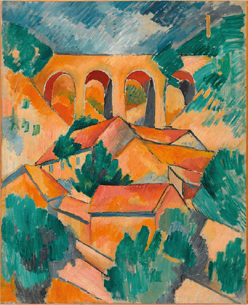
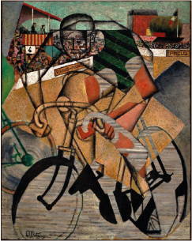
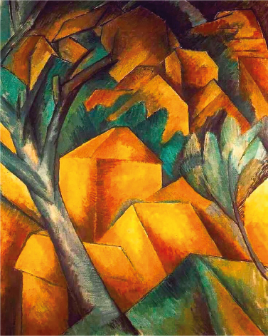
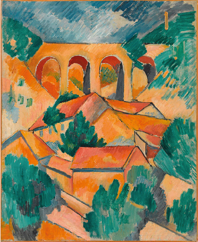
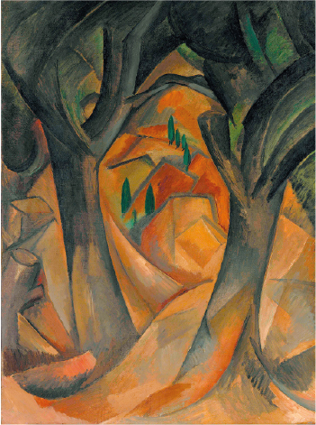

Georges Braque

Georges Braque (1882–1963) fue un pintor y escultor francés, considerado junto a Pablo Picasso el cofundador del Cubismo. Nació en Argenteuil y comenzó su carrera influenciado por el Fauvismo, con colores intensos y pinceladas libres. Sin embargo, a partir de 1907, tras conocer a Picasso, inició una colaboración que transformó el arte moderno: juntos desarrollaron el Cubismo Analítico, descomponiendo la realidad en planos geométricos y perspectivas múltiples. Braque se destacó por su interés en las naturalezas muertas y por su estilo sobrio y reflexivo, que aportó equilibrio y rigor al movimiento.
Forma, estructura y síntesis
Esta pintura de Georges Braque se sitúa en el momento en que el artista comienza a alejarse de la representación naturalista para centrarse en la estructura del paisaje. Influenciado por Paul Cézanne, Braque simplifica las formas de casas, árboles y arquitectura en volúmenes geométricos, generando una composición donde todo parece estar construido a partir de planos. La obra forma parte de los inicios del Cubismo, cuando Braque empieza a fragmentar la realidad y a explorar distintas perspectivas en una misma imagen.
Cubismo Analítico
El Cubismo Analítico es una de las etapas más revolucionarias del arte moderno, desarrollada entre 1909 y 1912 principalmente por Pablo Picasso y Georges Braque. En este período, los artistas rompen con la idea tradicional de representar el mundo tal como lo percibe el ojo humano desde un único punto de vista. En lugar de eso, comienzan a “analizar” los objetos, descomponiéndolos en múltiples planos y mostrándolos simultáneamente desde diferentes ángulos. Esto genera imágenes fragmentadas, donde el espectador debe reconstruir mentalmente la figura, participando activamente en la interpretación de la obra.
Visualmente, el cubismo analítico se caracteriza por una paleta de colores reducida, predominando los tonos neutros como ocres, grises y marrones, para no distraer la atención de la estructura. Los objetos como instrumentos musicales, botellas o retratos casi se vuelven difíciles de reconocer, ya que se rompen en pequeñas facetas que se entrelazan entre sí. Más que representar la apariencia, este estilo busca mostrar cómo está construido un objeto, marcando un cambio radical en la historia del arte al priorizar la percepción y la idea por sobre la imitación de la realidad.Una de las características más distintivas del cubismo analítico es su estética sobria y estructural.
La realidad fragmentada
Esta fragmentación no busca confundir, sino invitar al espectador a reconstruir mentalmente la imagen. Cada ángulo, cada plano, aporta información distinta, generando una experiencia visual más activa e intelectual. Así, la pintura deja de ser una ventana al mundo para convertirse en un lenguaje propio, donde la estructura, la percepción y el pensamiento adquieren un rol central en la construcción de la obra.

Obras Destacadas


